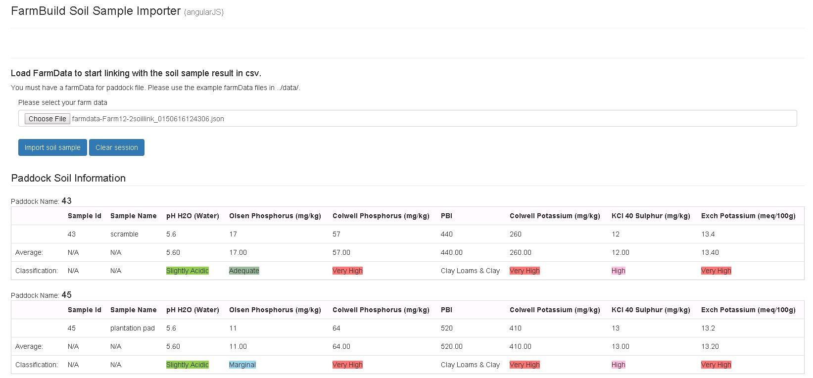

Farm Build Soil Sample Importer
This is the 'Soil Sample Importer' module of farmbuild javaScript library. GITHUB Repo
The 'Soil Sample Importer' has been designed as a Stand alone sample that can be integrated into new or existing platforms.
The sample include the ability to...
- Load a farmdatablock.json file (Can be generated from the Farmbuild Web Mapping module sample)
- Load a soil sample csv file
- Auto link or related samples to Farm Paddocks
- Link predefined lab sample elements to standardized elements(custom list in a JSON file).
- Export soil sample elements with Paddock relationships to JSON file
- View the soil element classifications (custom list in JSON file)

The Soil Sample Importer has been designed to write the soil samples and farm paddock data into a specified JSON structure called the 'Farm Data Block'.
Through the JSON structure, the JSON exports are interoperable with the other farmbuild modules.
The Soil Sample Importer can be customised to suit schema and classification preferences.